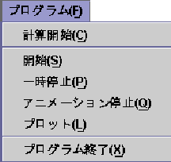

: 設定メニュー
: プルダウンメニューの機能
: プルダウンメニューの機能
プログラムメニューではFig.A.7に示すように，次のような機能
を持っている．
- 計算開始
- これを選択すると，外部プログラム(MaTX プログラム)が実行さ
れ，数値シミュレーションの計算が始まる．
これは設定パネルにある計算開始ボタンと同じ機能である．
- 開始
- これを選択すると，シミュレーションの可視化が
始まる．これは設定パネルにある開始ボタンと同じ機能である．
- 一時停止
- これを選択すると，シミュレーションの可視化が一時停止さ
れる．再び選択すると，シミュレーション可視化の続きが再び始まる．
これは設定パネルにある一時停止ボタンと同じ機能である．
- アニメーション停止
- これを選択すると，シミュレーションの可視化が停止される．
これは設定パネルにある停止ボタンと同じ機能である．
- プロット
- これを選択すると，グラフメニューで選択された時系列データに関
し2Dプロットを行う．
これは設定パネルにあるプロットボタンと同じ機能である．
- プログラム終了
- これを選択すると，シミュレータプログラムが終了する．
Fig. A.7:
プログラムメニュー
 |
Shigeki Nakaura
平成15年3月17日